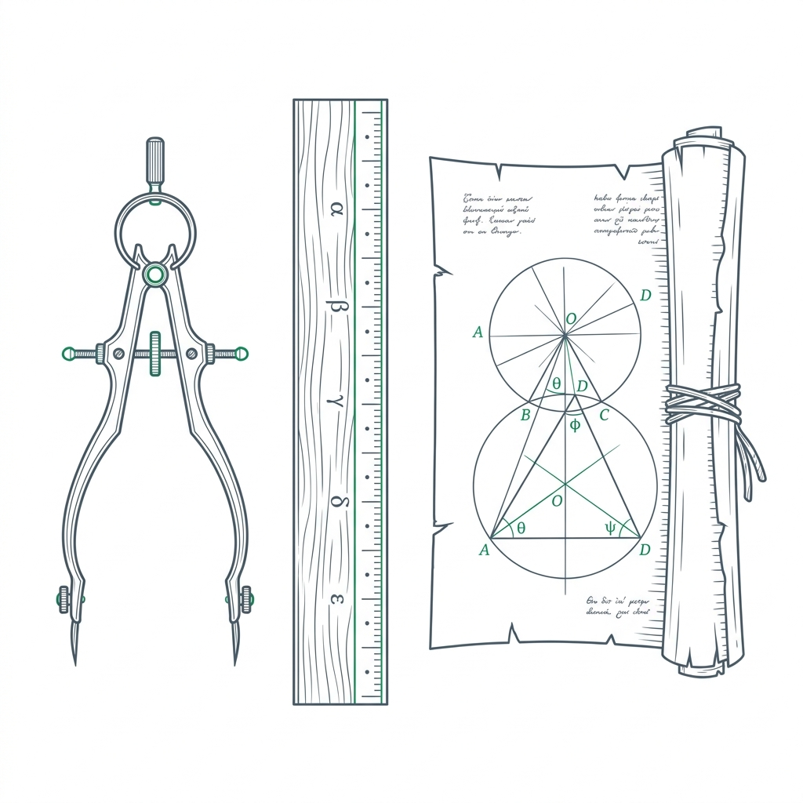
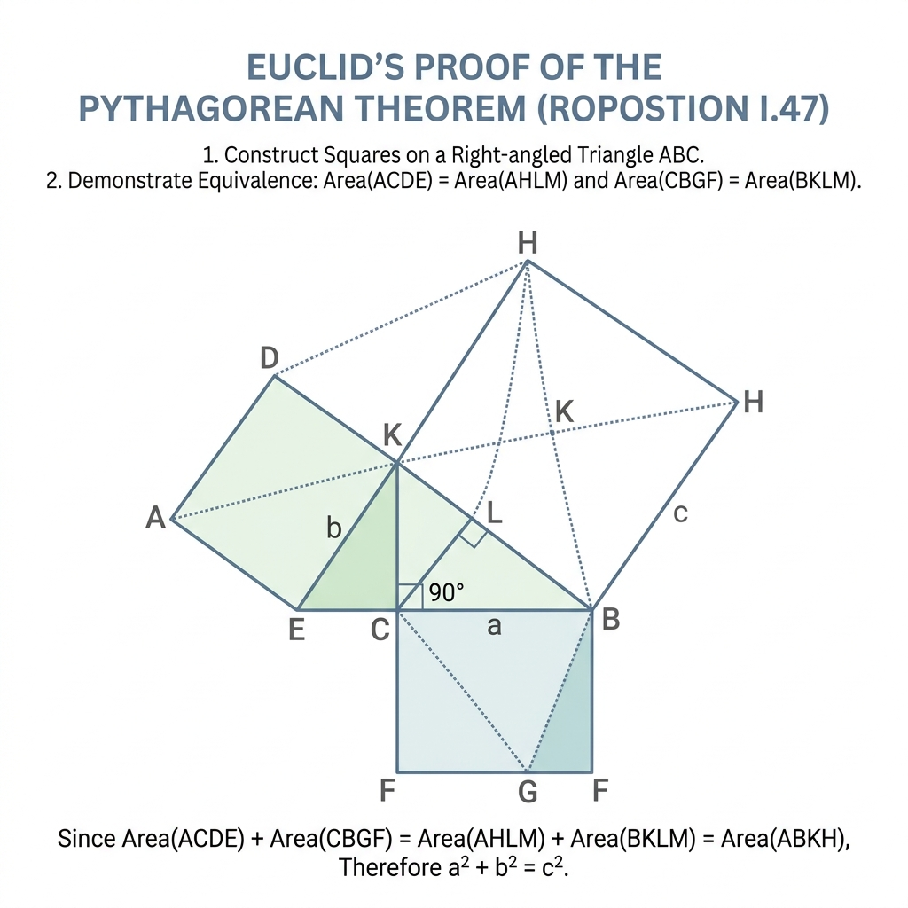
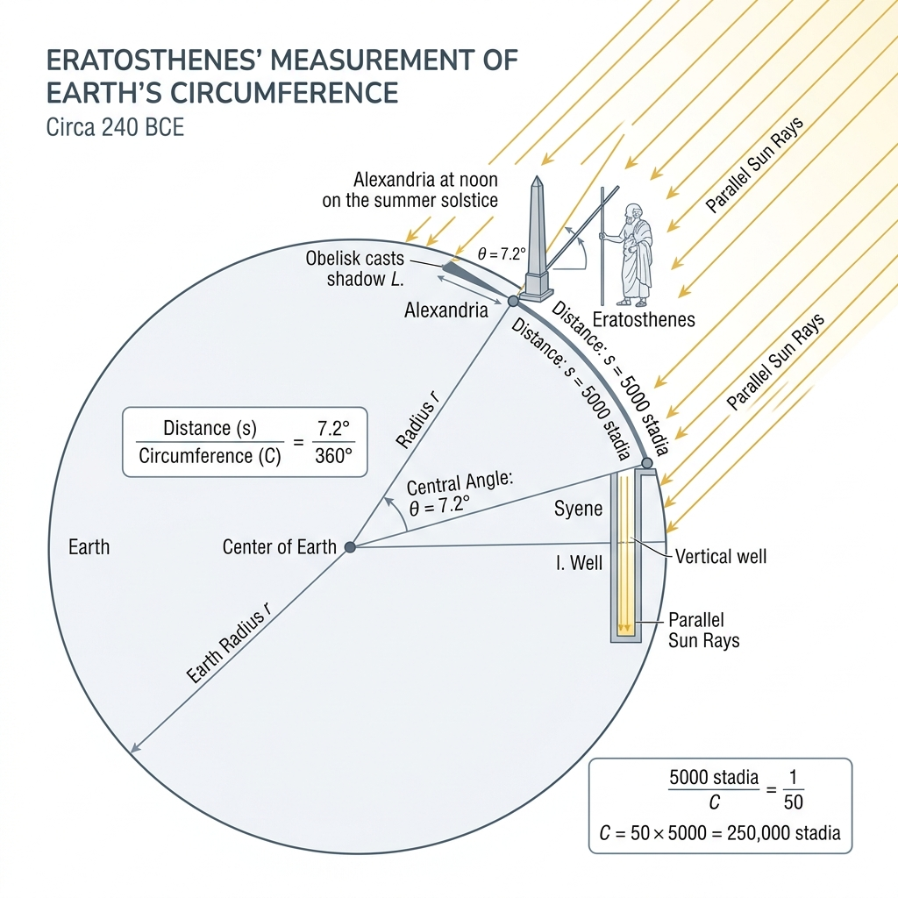
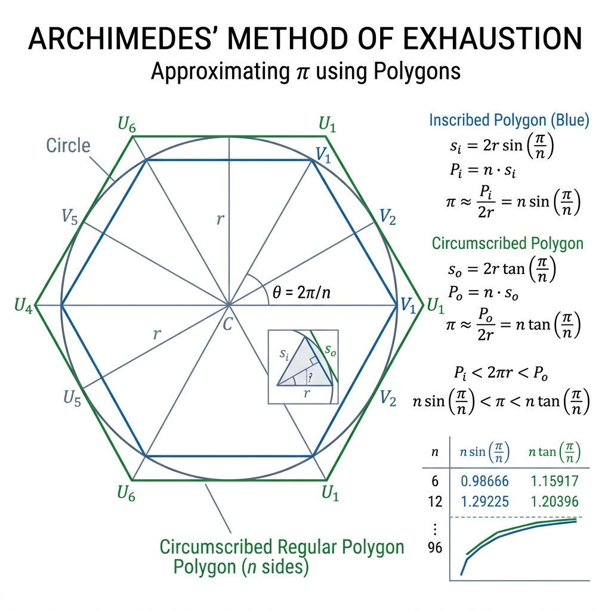
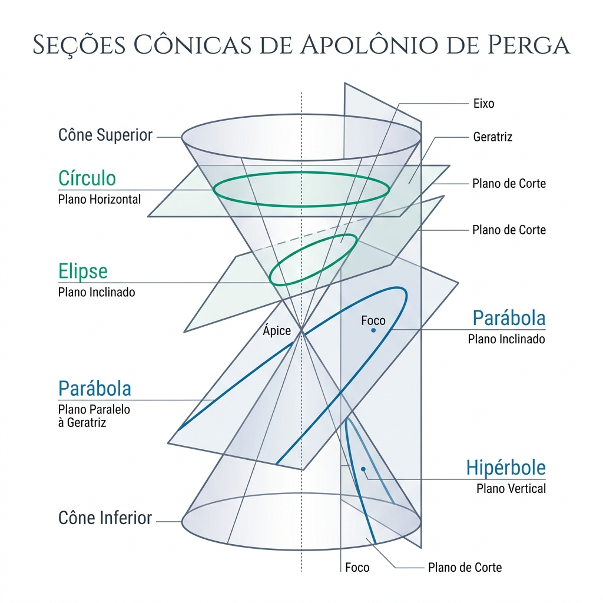

ROAN OMRI NUNES CAMPOS
IFBA, 2022189050003@IFBA.EDU.BR, CAMAÇARI, BA, BRASILPROF. ALEXANDRE LOPO
IFBA, ALEXANDRE@IFBA.EDU.BR , CAMAÇARI, BA, BRASILO Período Helenista (século IV a.C. ao século I a.C.) consolidou Alexandria como o maior centro científico da antiguidade clássica. Diferente do período grego clássico, focado no debate puramente filosófico, a matemática helenista integrou o rigor dedutivo com aplicações mecânicas e astronômicas práticas. Figuras proeminentes como Euclides, Arquimedes, Eratóstenes, Apolônio e Heron revolucionaram o conhecimento geométrico. O legado deste período é a fundação da matemática como ciência demonstrativa axiomática, que estruturou a lógica científica ocidental, combinada com inventos que desafiaram a engenharia de sua época e influenciaram o desenvolvimento do cálculo integral e da trigonometria.

Figura 1: Ferramentas clássicas da geometria helenista (régua, compasso e pergaminhos)
Figura 2: Prova da Proposição 47 (Teorema de Pitágoras) nos Elementos de EuclidesA pesquisa baseia-se em revisão histórico-bibliográfica dos tratados matemáticos clássicos gregos (como os de Euclides e Arquimedes) em articulação com simulações computacionais em geometria dinâmica (GeoGebra). Reconstruímos virtualmente os experimentos históricos, como a medição da sombra do gnómon de Eratóstenes em Alexandria e Siena, a espiral de Arquimedes e a quadratura da parábola, facilitando a visualização pedagógica dos métodos antigos por meio de mídias interativas modernas.

Figura 3: Esquematização da Geometria do Experimento de Medição da Terra de EratóstenesA análise demonstra que o método axiomático de Euclides estabeleceu um padrão de rigor inigualável, onde teoremas complexos derivam logicamente de apenas cinco postulados comuns. No campo prático, Arquimedes antecipou as ideias fundamentais do cálculo integral com seu método de exaustão para determinar a área sob a parábola e volumes de esferas. A reconstrução digital do método de Eratóstenes revelou uma impressionante precisão científica (margem de erro menor que 2% em relação aos dados de satélite atuais), evidenciando o poder da geometria trigonométrica básica associada à observação empírica de eventos celestes e medições terrestres sistemáticas.

Figura 4: Método de Exaustão de Arquimedes para estimativa dos limites do valor de PiO Período Helenista foi o apogeu da geometria dedutiva antiga, demonstrando que a abstração teórica e a aplicabilidade prática caminham juntas. O método axiomático euclidiano estruturou a ciência por dois milênios, e as aproximações de Arquimedes semearam o cálculo moderno. Estudar este legado na educação contemporânea, aliando história da ciência com softwares interativos de geometria dinâmica, humaniza o ensino da matemática. Isso conecta os estudantes com os grandes desafios da antiguidade e estimula a curiosidade científica por meio do entendimento de que as fórmulas matemáticas são frutos do esforço e da observação humana ao longo do tempo.

Figura 5: As Seções Cônicas de Apolônio de Perga obtidas pela interseção de planos em um cone duplo